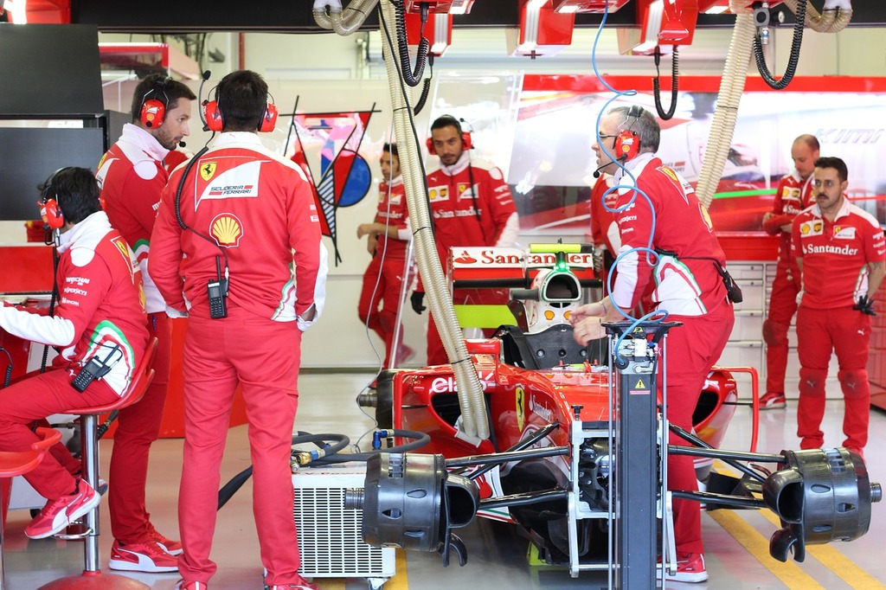
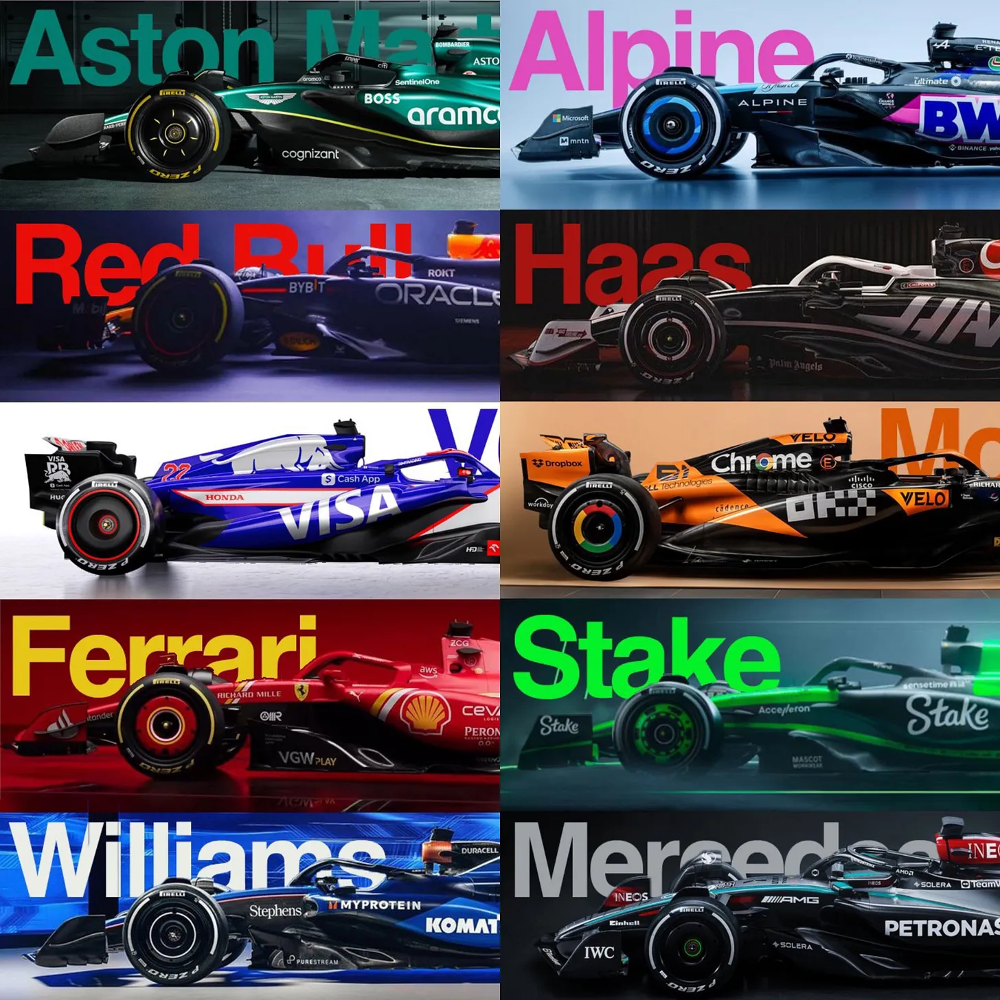
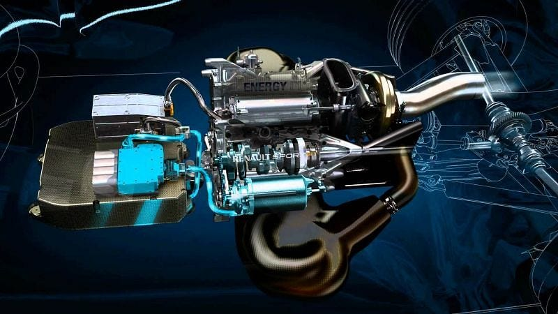
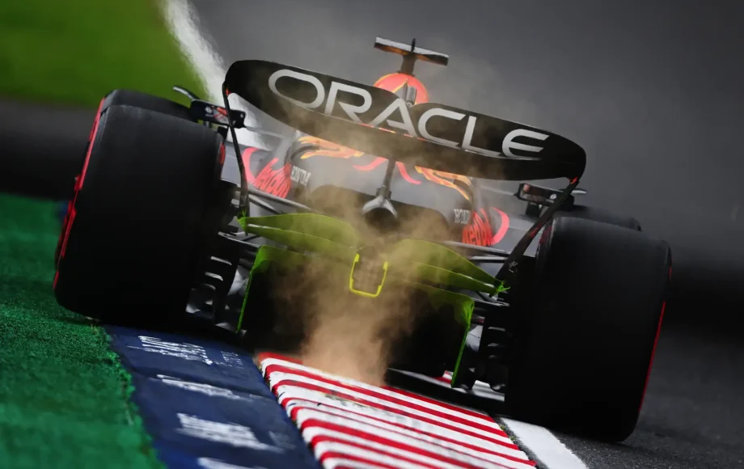
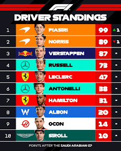
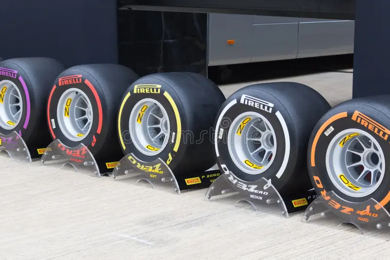

F1 is a number 1 international racing sport in the world
F1 started in 1950, with the first race being Formula 1 started in 1950 at Silverstone in the UK.
F1 involves 20 drivers who need to drive atleast 350 Kilometers on a track often involving many laps around that track per race
F1 has evolved a lot over the decades with faster cars and advanced technology.
Now that you know that basics lets get into the facts about F1!
1. F1 is a really expensive sport
Each season costs between $135 - $350 million dollars per season for each team!
Public Domain, Source: Pixabay
2. F1 pit stops are extremely fast
Each pit stop can be done in under 3 seconds, replacing tires, and fixing other damages. The fastest ever recoded pit stop was 1.8 seconds by the Mclaren Pit Crew for the driver Lando Norris. Thats replacing all tires in 1.8 seconds!

Public Domain, Source: Pixabay
3. F1 cars travel at extremely high speeds
On average of 200mph! This makes it a highly intense sport.
Currently the teams go as followed:
McLaren
Ferrari
Red Bull Racing
Mercedes
Aston Martin
Alpine
Haas
Racing Bulls
Williams
Kick Sauber

Credits: The Race @weartherace
5. Modern F1 cars have hybrid engines combining electric and fuel power.

Free to Use, caroto.gr
6. DRS (Drag Reduction System) helps cars go faster on straights.

Free to Use, CPL
7. Monaco, Spa-Francorchamps, Silverstone, and Suzuka are some of the most iconic tracks.
Other track facts:
Tracks have unique challenges: tight corners, fast straights, and unpredictable weather.
Lap records show how fast the best drivers can go.
Unsplash Free to Use, Author: Filipp Romanovski
8. Standings change every race; points are awarded based on finishing positions.

Free to Use, Formula1
9. Some F1 drivers start racing as young as 7 years old in karting before reaching F1.
Free to Use, Dreamstime
10. Safety in F1 has improved massively; the halo device protects drivers’ heads from debris.
Free to Use, Formula1
11. F1 tires are specially designed for each type of weather and track conditions.

Free to Use, Dreamstime
12. The fastest recorded F1 cornering speed can exceed 250 km/h in some tracks.
Free to Use, RedBull
13. F1 drivers experience forces up to 5G during races.
Free To Use, Formula 1 Dictionary, Aerodynamics of F1